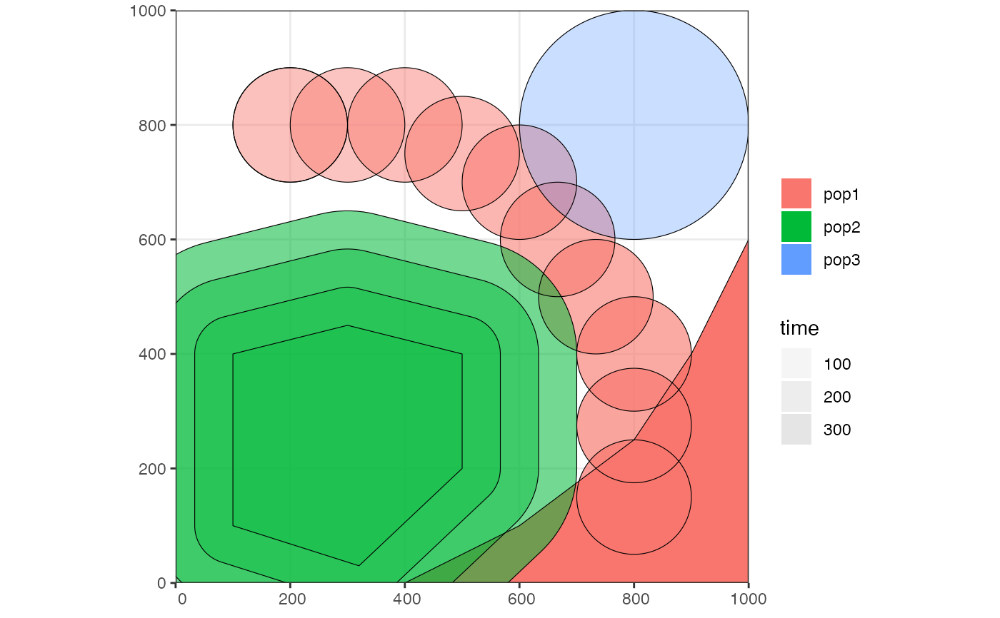

Resizes the population starting from the current value of N
individuals to the specified value
Arguments
- pop
Object of the class
slendr_pop- N
Population size after the change
- how
How to change the population size (options are
"step"or"exponential")- time
Time of the population size change
- end
End of the population size change period (used for exponential change events)
Value
Object of the class slendr_pop, which contains population
parameters such as name, time of appearance in the simulation, parent
population (if any), and its spatial parameters such as map and spatial
boundary.
Details
In the case of exponential size change, if the final N is larger than
the current size, the population will be exponentially growing over the
specified time period until it reaches N individuals. If N is
smaller, the population will shrink exponentially.
Note that because slendr models have to accomodate both SLiM and msprime back ends, population sizes and split times are rounded to the nearest integer value.
Examples
# spatial definitions -----------------------------------------------------
# create a blank abstract world 1000x1000 distance units in size
map <- world(xrange = c(0, 1000), yrange = c(0, 1000), landscape = "blank")
# create a circular population with the center of a population boundary at
# [200, 800] and a radius of 100 distance units, 1000 individuals at time 1
# occupying a map just specified
pop1 <- population("pop1", N = 1000, time = 1,
map = map, center = c(200, 800), radius = 100)
# printing a population object to a console shows a brief summary
pop1
#> slendr 'population' object
#> --------------------------
#> name: pop1
#> habitat: terrestrial
#>
#> number of spatial maps: 1
#> map: abstract spatial landscape with custom features
#> stays until the end of the simulation
#>
#> population history overview:
#> - time 1: created as an ancestral population (N = 1000)
# create another population occupying a polygon range, splitting from pop1
# at a given time point (note that specifying a map is not necessary because
# it is "inherited" from the parent)
pop2 <- population("pop2", N = 100, time = 50, parent = pop1,
polygon = list(c(100, 100), c(320, 30), c(500, 200),
c(500, 400), c(300, 450), c(100, 400)))
pop3 <- population("pop3", N = 200, time = 80, parent = pop2,
center = c(800, 800), radius = 200)
# move "pop1" to another location along a specified trajectory and saved the
# resulting object to the same variable (the number of intermediate spatial
# snapshots can be also determined automatically by leaving out the
# `snapshots = ` argument)
pop1_moved <- move(pop1, start = 100, end = 200, snapshots = 6,
trajectory = list(c(600, 820), c(800, 400), c(800, 150)))
pop1_moved
#> slendr 'population' object
#> --------------------------
#> name: pop1
#> habitat: terrestrial
#>
#> number of spatial maps: 10
#> map: abstract spatial landscape with custom features
#> stays until the end of the simulation
#>
#> population history overview:
#> - time 1: created as an ancestral population (N = 1000)
#> - time 100-200: movement across a landscape
# many slendr functions are pipe-friendly, making it possible to construct
# pipelines which construct entire history of a population
pop1 <- population("pop1", N = 1000, time = 1,
map = map, center = c(200, 800), radius = 100) %>%
move(start = 100, end = 200, snapshots = 6,
trajectory = list(c(400, 800), c(600, 700), c(800, 400), c(800, 150))) %>%
set_range(time = 300, polygon = list(
c(400, 0), c(1000, 0), c(1000, 600), c(900, 400), c(800, 250),
c(600, 100), c(500, 50))
)
# population ranges can expand by a given distance in all directions
pop2 <- expand_range(pop2, by = 200, start = 50, end = 150, snapshots = 3)
# we can check the positions of all populations interactively by plotting their
# ranges together on a single map
plot_map(pop1, pop2, pop3)

# gene flow events --------------------------------------------------------
# individual gene flow events can be saved to a list
gf <- list(
gene_flow(from = pop1, to = pop3, start = 150, end = 200, rate = 0.15),
gene_flow(from = pop1, to = pop2, start = 300, end = 330, rate = 0.25)
)
# compilation -------------------------------------------------------------
# compile model components in a serialized form to dist, returning a single
# slendr model object (in practice, the resolution should be smaller)
model <- compile_model(
populations = list(pop1, pop2, pop3), generation_time = 1,
resolution = 100, simulation_length = 500,
competition = 5, mating = 5, dispersal = 1
)